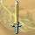
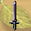
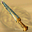
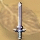
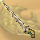

圖示產品名重量等級需求工作經驗商店售價需要原料
 新手銅劍301388青銅塊 2 白楊木 4
 青銅劍3554108青銅塊 3 白楊木 4
青銅闊劍40106128青銅塊 4 白楊木 4
精銅短劍25158204銅塊 3 柚木 4
 戰鬥短劍30209240銅塊 4 柚木 4
鐵長劍402511288鐵塊 4 紅檜 4
鑲銀長劍403013336鐵塊 4 銀塊 1 紅檜 4
銀劍503514408鐵塊 2 銀塊 4 紅檜 4
青霜劍504016360鐵塊 3 金塊 2 紫杉 4
鋼劍554518324鋼條 2 青銅塊 1 紫杉 4
破甲鋼劍6050191051鋼條 3 銅塊 1 黑檀木 4
 白銀鋼劍7055211372鋼條 4 銀塊 3 黑檀木 4
 蛇形劍8060231520鋼條 4 金塊 2 鐵杉 4
合金短劍9065241849合金鋼 3 鋼條 3 鐵杉 4
白金長劍9070262165白金塊 3 鋼條 2 紅豆杉 4
斬鐵劍100| 75 | | | | | | | | | | | | | | | | | | | | | | | | | | | | | | | | | | | | | | | | | | | | | | | | | | | | | | | | | | | | | | | | | | | | | | | | | | | | | | | | | | | | | | | | | | | | | | | | | | | | | | | | | | | | | | | | | | | |